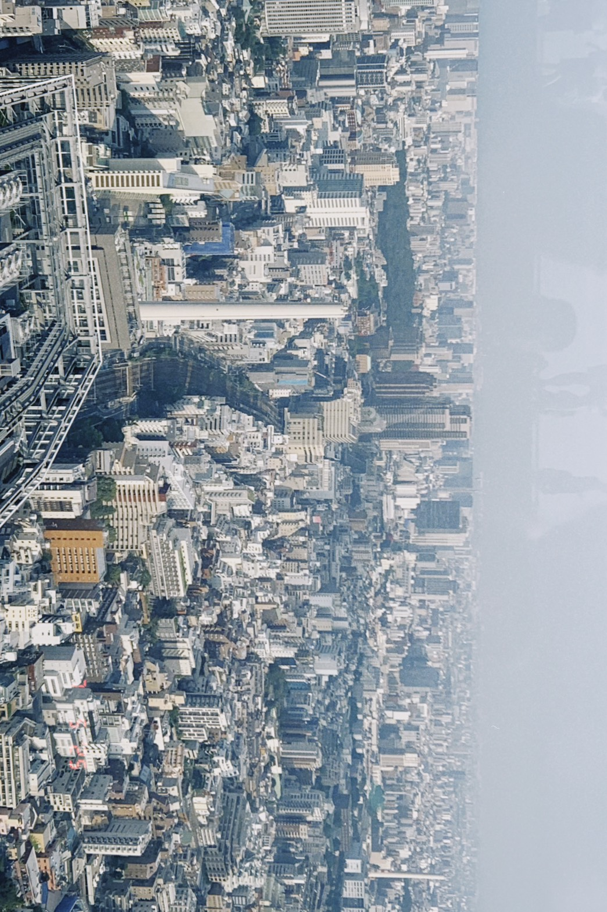
01 / 03
01 — A LITTLE ABOUT METAIWAN · 2026
歡迎大家認識我
關於我
我是宋妍甄，目前就讀南臺科技大學視覺傳達設計系商業設計組三年級。
曾擔任學生會幹部，讓我學會與人溝通、合作，也和夥伴一起完成每一件事。
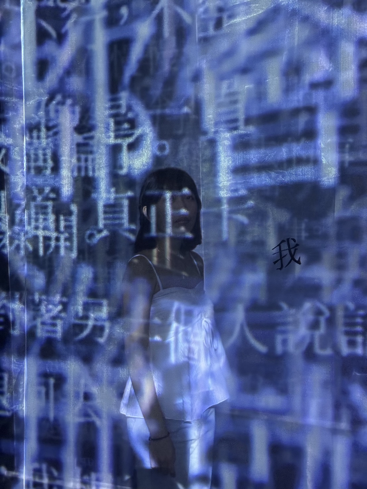
✳
用設計記錄所見，也為平凡日常
留下一點自己的想法。
02 — MAKING THINGS HAPPENPEOPLE · TEAMWORK · MOMENTS
一起完成的每一件事
活動經驗
曾擔任學生會幹部，也參與過各種校園活動。從籌備到現場執行，每一次合作都累積了新的經驗與回憶。
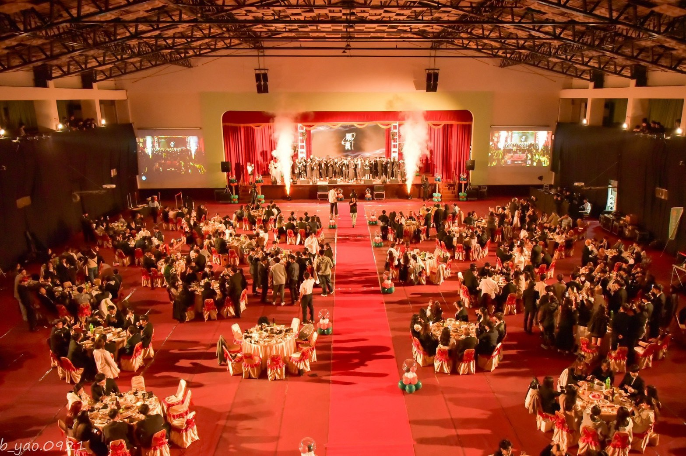
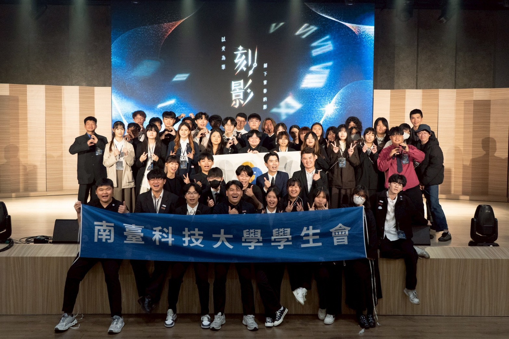
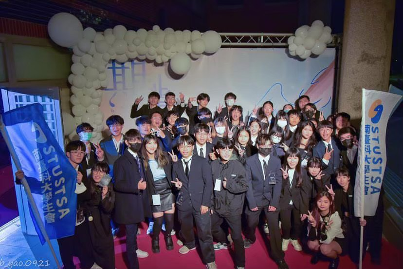
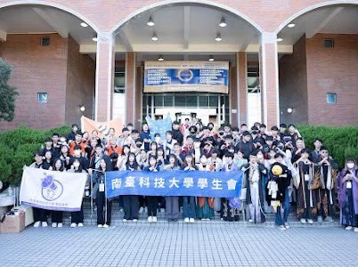
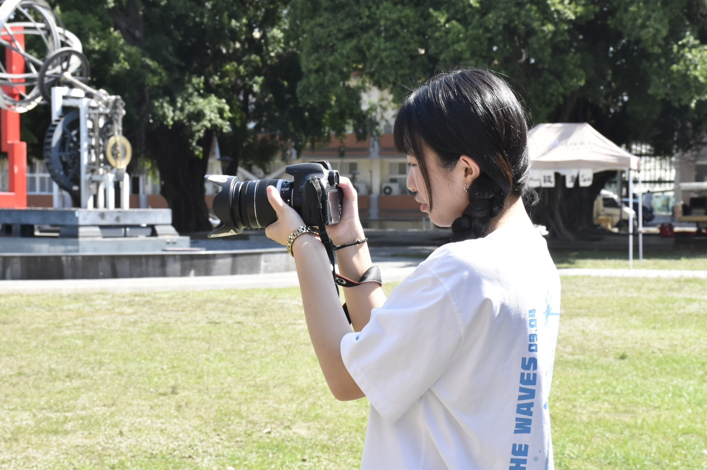
從每一次分工與交流裡，學習把事情做好。
03 — PLACES THAT INSPIREART · EXHIBITIONS · CURIOSITY
讓靈感慢慢發生
興趣
我喜歡參觀各種展覽，在不同的作品和空間裡看看、感受，也把遇見的新想法帶回日常。
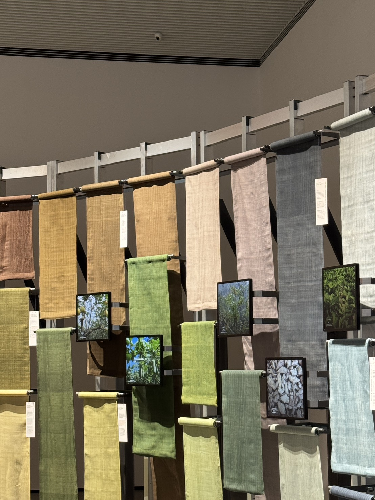
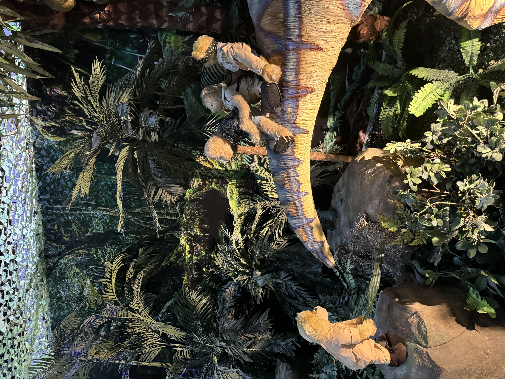
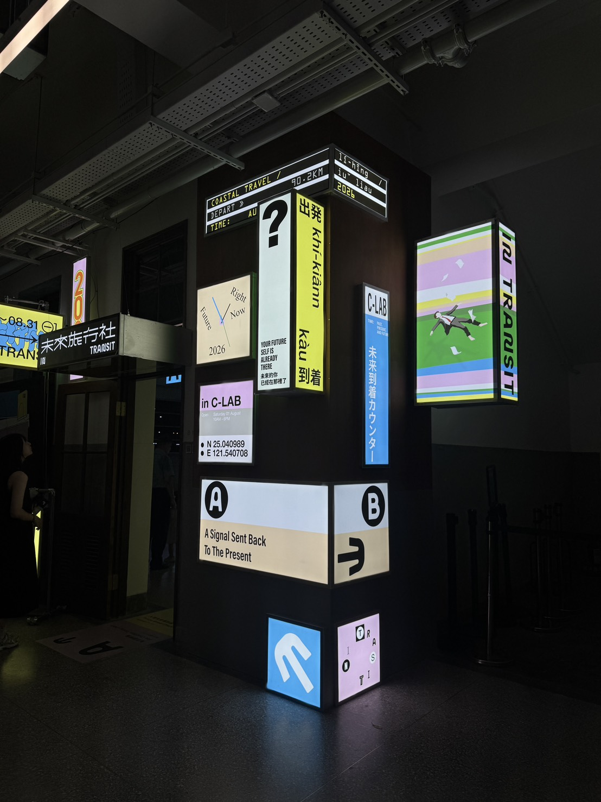
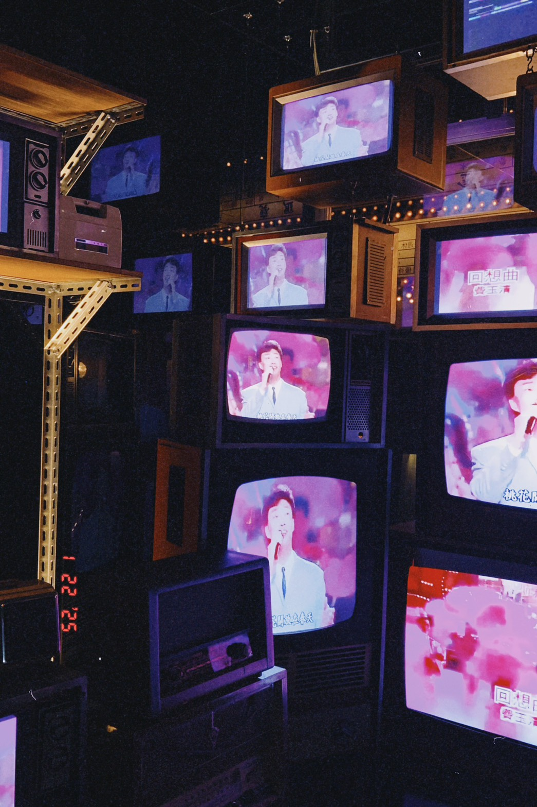
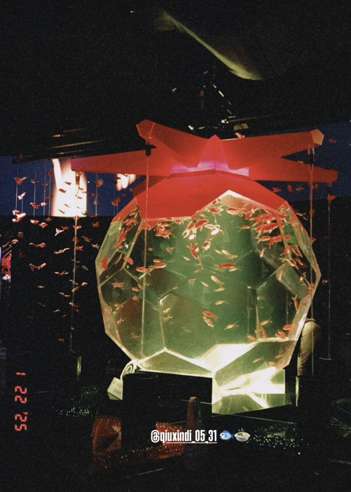
收藏日常裡遇見的靈感✳
謝謝你來看看我的生活片段
回到最上方